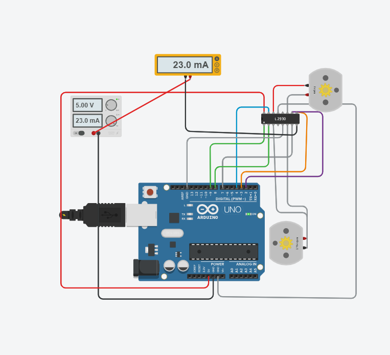
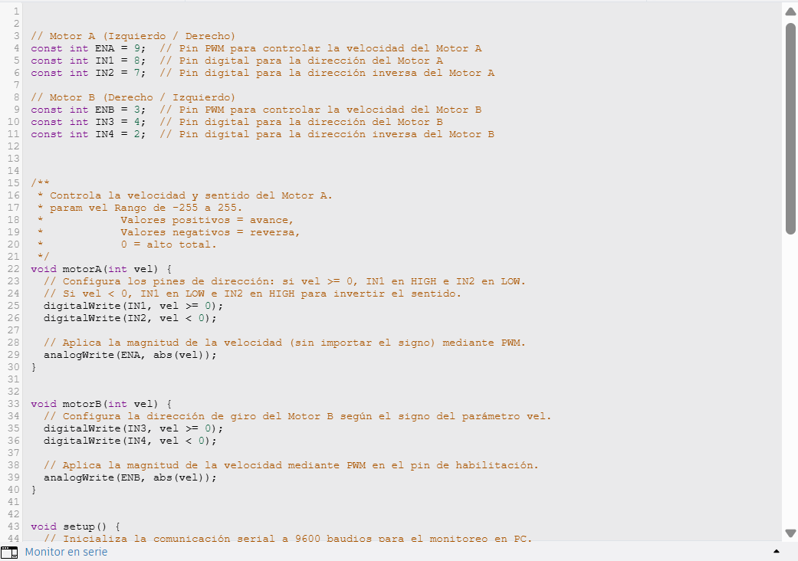
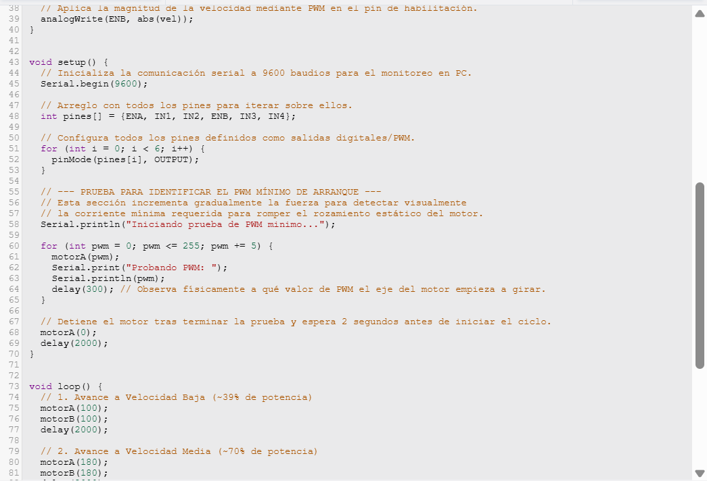
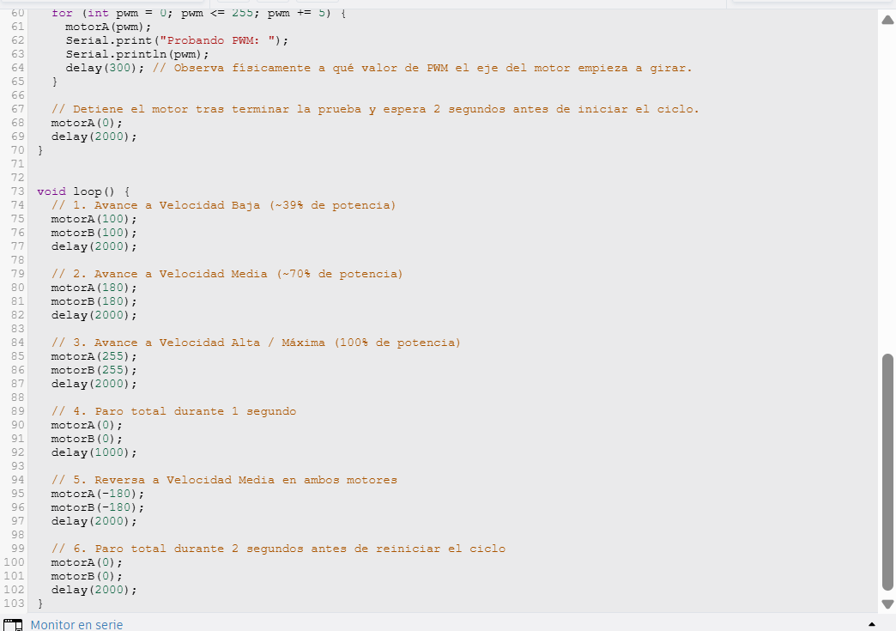
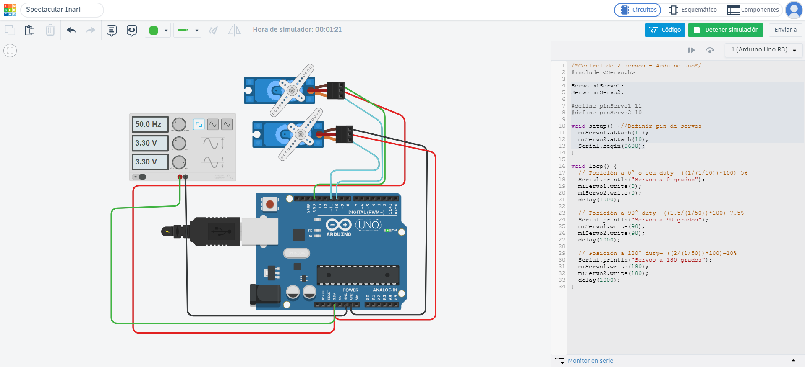
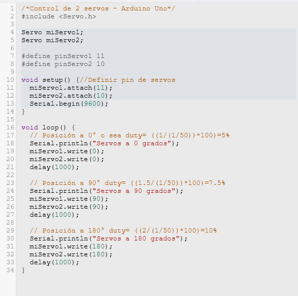

Reporte de Práctica: Motor DC, Puente H & Servomotores
1. Objetivos
- Control de Dirección y Velocidad (Motor DC):
- Controlar el giro del motor DC en ambos sentidos mediante pines lógicos (
IN1/IN2eIN3/IN4). - Implementar control de velocidad utilizando modulación por ancho de pulso (PWM) con al menos 3 velocidades distintas.
- Identificar experimentalmente el valor de PWM mínimo requerido para el arranque del motor.
- Prueba de Carga y Medición de Corriente:
- Medir el consumo de corriente durante el arranque y en estado de giro libre intercalando un multímetro en serie.
- Comparar ambos valores de corriente y justificar teóricamente cuál es mayor y por qué.
- Control de Servomotores:
- Demostrar el posicionamiento angular de dos servomotores a \(0^\circ\), \(90^\circ\) y \(180^\circ\).
- Explicar y calcular el ciclo de trabajo (Duty Cycle) de la señal PWM para cada una de las posiciones angulares.
2. Materiales Utilizados
- Microcontrolador Arduino Uno R3 (o ESP32 DevKit V1 según implementación)
- Driver Puente H (L293D / TB6612)
- 2× Motores DC TT con caja reductora
- 2× Servomotores SG90
- Fuente de alimentación regulada de \(5\text{ V}\) (independiente / compartida con GND común)
- Multímetro digital
- Protoboard y jumpers de conexión
3. Códigos Implementados (con Comentarios)
Circuito 1: Control de Motores DC con Puente H (L293D)
1. Esquemático del Circuito

2. Evidencia de Código (Capturas de Pantalla)
Parte 1: Definición de pines y funciones de control (motorA, motorB)

Parte 2: Configuración del setup() y prueba de PWM mínimo de arranque

Parte 3: Ciclo principal (loop()) con velocidades y reversa

3. Video de Funcionamiento
Circuito 2: Control de Servomotores (\(0^\circ\), \(90^\circ\) y \(180^\circ\))
1. Esquemático del Circuito

2. Evidencia de Código (Capturas de Pantalla)
Código Completo: Librería Servo.h, definición de pines y secuencia de ángulos (\(0^\circ\), \(90^\circ\), \(180^\circ\))

3. Video de Funcionamiento
4. Explicación Teórica y Análisis de Resultados
Control del Motor DC y Puente H
El driver L293D nos permite controlar el sentido de giro mediante una configuración en puente H. Al colocar el pin IN1 en nivel ALTO y el IN2 en BAJO, la corriente fluye en un sentido a través de los devanados del motor. Invertir estos estados conmuta la polaridad aplicada y cambia el sentido de giro.
La velocidad se regula variando el ciclo de trabajo de la señal PWM aplicada a los pines de habilitación (ENA / ENB). Durante las pruebas en Tinkercad se identificaron 3 niveles operativos claros:
1. Velocidad Baja (PWM = 100): \(39\%\) del ciclo de trabajo.
2. Velocidad Media (PWM = 180): \(70\%\) del ciclo de trabajo.
3. Velocidad Alta (PWM = 255): \(100\%\) del ciclo de trabajo.
Medición de Corriente (Prueba de Carga)
Con el multímetro configurado en amperímetro e intercalado en serie entre la línea de alimentación positiva (\(V_{CC}\)) y el puente H, se registraron las siguientes lecturas:
| Estado del Motor | Corriente Medida (\(\text{mA}\)) | Observaciones |
|---|---|---|
| Paro / Reposo | \(1.04\text{ mA} - 4.89\text{ mA}\) | Consumo estático de la lógica del integrado L293D |
| Giro Libre (PWM 100 - 180) | \(58.1\text{ mA} - 108.0\text{ mA}\) | Motor A/B girando libremente sin carga |
| Giro Libre (PWM 255) | \(151.0\text{ mA}\) | Motores girando a velocidad máxima |
| Arranque / Inrush Current | Pico Máximo Instantáneo | Consumo pico al vencer la inercia del eje |
Comparación de Corrientes: ¿Cuál es mayor y por qué?
La corriente de arranque es significativamente mayor que la corriente en giro libre.
Justificación física: 1. Fuerza Electromotriz Nula (Sin contra-FEM): Cuando el motor está completamente detenido, no existe rotación del inducido dentro del campo magnético y la Fuerza Electromotriz opuesta (contra-FEM) es cero. Por lo tanto, en el instante exacto de arranque, la corriente depende únicamente de la resistencia pura de los devanados del motor (\(I = \frac{V}{R}\)), generando un consumo de corriente muy elevado. 2. Inercia Mecánica: El motor debe consumir mayor torque para vencer la inercia del rotor detenido y la fricción estática inicial de las partes mecánicas. 3. Estabilización: Una vez que el motor alcanza una velocidad de régimen estable en giro libre, la contra-FEM generada se opone al voltaje de entrada, reduciendo drásticamente el flujo de corriente hasta quedar únicamente la energía necesaria para vencer la fricción dinámica.
Cálculos del Ciclo de Trabajo (Duty Cycle) en Servomotores
Los servomotores estándar (como el SG90) operan con una señal PWM que tiene un período estandarizado de \(T = 20\text{ ms}\) (\(50\text{ Hz}\)). La posición angular depende de la duración del pulso en estado ALTO (\(t_{on}\)):
-
Posición a \(0^\circ\) (\(t_{on} = 1.0\text{ ms}\)): $\(\text{Duty Cycle} = \left( \frac{1.0\text{ ms}}{20.0\text{ ms}} \right) \times 100 = 5\%\)$
-
Posición a \(90^\circ\) (\(t_{on} = 1.5\text{ ms}\)): $\(\text{Duty Cycle} = \left( \frac{1.5\text{ ms}}{20.0\text{ ms}} \right) \times 100 = 7.5\%\)$
-
Posición a \(180^\circ\) (\(t_{on} = 2.0\text{ ms}\)): $\(\text{Duty Cycle} = \left( \frac{2.0\text{ ms}}{20.0\text{ ms}} \right) \times 100 = 10\%\)$
5. Reporte de Fallas
| # | Síntoma de la Falla | Cómo se encontró | Solución Aplicada |
|---|---|---|---|
| 1 | El multímetro en Tinkercad mostraba \(25.0\text{ kA}\) y hacía cortocircuito. | Se observó una lectura erronea en el amperímetro al arrancar la simulación. | El multímetro estaba conectado en paralelo entre \(+5\text{V}\) y GND. Se corrigió la conexión abriendo el cable positivo del puente H y conectándolo en serie. |
| 2 | Lectura del multímetro fija en microamperios (\(40.0\text{ }\mu\text{A}\)) mientras los motores funcionaban. | La corriente indicada no cambiaba al modificar la velocidad de los motores. | Había un cable positivo directo de la fuente que se saltaba el multímetro. Se eliminó la línea directa obligando a que toda la corriente fluya a través del amperímetro. |
| 3 | Inconsistencia en la asignación de pines de los servomotores. | Al revisar el código del setup(), las directivas #define pinServo1 11 y #define pinServo2 10 estaban invertidas (attach(10) y attach(11)). |
Se modificó el código para llamar directamente a las variables definidas: miServo1.attach(pinServo1); y miServo2.attach(pinServo2);. |
| 4 | Solamente uno de los dos servomotores se movía durante el ciclo. | En la primera versión del código se incluyeron las instrucciones write() únicamente para un solo servomotor. |
Se duplicaron y ajustaron las instrucciones agregando las líneas correspondientes para miServo2.write() en las 3 posiciones del ciclo. |
6. Conclusiones
- El control de sentido y velocidad en motores DC fue implementado de forma satisfactoria mediante el puente H L293D y modulación PWM, logrando transiciones entre paro, 3 velocidades y reversa.
- Se comprobó de manera experimental la teoría de motores de corriente continua: la corriente de arranque es significativamente mayor a la corriente de giro libre debido a la ausencia inicial de la Fuerza Electromotriz opuesta (contra-FEM) y al esfuerzo mecánico necesario para vencer la inercia estática.
- El posicionamiento angular de servomotores depende directamente de la modulación del ancho del pulso (\(t_{on}\)) en un ciclo fijo de \(20\text{ ms}\), validando experimentalmente las relaciones de duty cycle de \(5\%\), \(7.5\%\) y \(10\%\) para los ángulos de \(0^\circ\), \(90^\circ\) y \(180^\circ\) respectivamente.
//se uso Claude para la estructuralizacion de este reporte